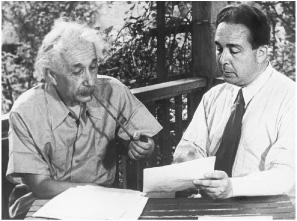

With Leó Szilárd reenacting (in 1946) their 1939 meeting
Leó Szilárd, a charming and slightly eccentric Hungarian physicist, was an old friend of Einstein’s. While living in Berlin in the 1920s, they had collaborated on the development of a new type of refrigerator, which they patented but were unable to market successfully.1 After Szilárd fled the Nazis, he made his way to England and then New York, where he worked at Columbia University on ways to create a nuclear chain reaction, an idea he had conceived while waiting at a stop-light in London a few years earlier. When he heard of the discovery of fission using uranium, Szilárd realized that element might be used to produce this potentially explosive chain reaction.
Szilárd discussed this possibility with his close friend Eugene Wigner, another refugee physicist from Budapest, and they began to worry that the Germans might try to buy up the uranium supplies of the Congo, which was then a colony of Belgium. But how, they asked themselves, could two Hungarian refugees in America find a way to warn the Belgians? Then Szilárd recalled that Einstein happened to be friends with that country’s queen mother.
Einstein was spending the summer of 1939 in a rented cottage on the north fork of eastern Long Island, across the Great Peconic Bay from the villages of the Hamptons. There he sailed his small boat Tinef, bought sandals from the local department store, and played Bach with the store’s owner.2
“We knew that Einstein was somewhere on Long Island but we didn’t know precisely where,” Szilárd recalled. So he phoned Einstein’s Princeton office and was told he was renting the house of a Dr. Moore in the village of Peconic. On Sunday, July 16, 1939, they embarked on their mission with Wigner at the wheel (Szilárd, like Einstein, did not drive).
But when they arrived they couldn’t find the house, and nobody seemed to know who Dr. Moore was. Just as they were ready to give up, Szilárd saw a young boy standing by the curb. “Do you, by any chance, know where Professor Einstein lives?” Like most people in town, even those who had no idea who Dr. Moore was, the boy did, and he led them up to a cottage near the end of Old Grove Road, where they found Einstein lost in thought.3
Sitting at a bare wooden table on the screen porch of the sparsely furnished cottage, Szilárd explained the process of how an explosive chain reaction could be produced in uranium layered with graphite by the neutrons released from nuclear fission. “I never thought of that!” Einstein interjected. He asked a few questions, went over the process for fifteen minutes, and then quickly grasped the implications. Instead of writing to the queen mother, Einstein suggested, perhaps they should write to a Belgian minister he knew.
Wigner, showing some sensible propriety, suggested that perhaps three refugees should not be writing to a foreign government about secret security matters without consulting with the State Department. In which case, they decided, perhaps the proper channel was a letter from Einstein, the only one of them famous enough to be heeded, to the Belgian ambassador, with a cover letter to the State Department. With that tentative plan in mind, Einstein dictated a draft in German. Wigner translated it, gave it to his secretary to be typed, and then sent it to Szilárd.4
A few days later, a friend arranged for Szilárd to talk to Alexander Sachs, an economist at Lehman Brothers and a friend of President Roosevelt. Showing a bit more savvy than the three theoretical physicists, Sachs insisted that the letter should go right to the White House, and he offered to hand-deliver it.
It was the first time Szilárd had met Sachs, but his bold plan was appealing. “It could not do any harm to try this way,” he wrote Einstein. Should they talk by phone or meet in person to revise the letter? Einstein replied that he should come back out to Peconic.
By that point Wigner had gone to California for a visit. So Szilárd enlisted, as driver and scientific sidekick, another friend from the amazing group of Hungarian refugees who were theoretical physicists, Edward Teller.5 “I believe his advice is valuable, but also I think you might enjoy getting to know him,” Szilárd told Einstein. “He is particularly nice.”6 Another plus was that Teller had a big 1935 Plymouth. So once again, Szilárd headed out to Peconic.
Szilárd brought with him the original draft from two weeks earlier, but Einstein realized that they were now planning a letter that was far more momentous than one asking Belgian ministers to be careful about Congolese uranium exports. The world’s most famous scientist was about to tell the president of the United States that he should begin contemplating a weapon of almost unimaginable impact that could unleash the power of the atom.“Einstein dictated a letter in German,” Szilárd recalled, “which Teller took down, and I used this German text as a guide in preparing two drafts of a letter to the President.”7
According to Teller’s notes, Einstein’s dictated draft not only raised the question of Congo’s uranium, but also explained the possibility of chain reactions, suggested that a new type of bomb could result, and urged the president to set up formal contact with physicists working on this topic. Szilárd then prepared and sent back to Einstein a 45-line version and a 25-line one, both dated August 2, 1939, “and left it up to Einstein to choose which he liked best.” Einstein signed them both in a small scrawl, rather than with the flourish he sometimes used.8
The longer version, which is the one that eventually reached Roosevelt, read in part:
Sir:
Some recent work by E. Fermi and L. Szilárd, which has been communicated to me in a manuscript, leads me to expect that the element uranium may be turned into a new and important source of energy in the immediate future. Certain aspects of this situation which has arisen seem to call for watchfulness and, if necessary, quick action on the part of the Administration. I believe therefore that it is my duty to bring to your attention the following facts and recommendations:
. . . It may become possible to set up a nuclear chain reaction in a large mass of uranium, by which vast amounts of power and large quantities of new radium-like elements would be generated. Now it appears almost certain that this could be achieved in the immediate future.
This new phenomena would also lead to the construction of bombs, and it is conceivable—though much less certain—that extremely powerful bombs of a new type may thus be constructed. A single bomb of this type, carried by boat and exploded in a port, might very well destroy the whole port together with some of the surrounding territory . . .
In view of this situation you may think it desirable to have some permanent contact maintained between the administration and the group of physicists working on chain reactions in America.
It ended with a warning that German scientists might be pursuing a bomb. Once the letter had been written and signed, they still had to figure out who could best get it into the hands of President Roosevelt. Einstein was unsure about Sachs. They considered, instead, financier Bernard Baruch and MIT President Karl Compton.
More amazingly, when Szilárd sent back the typed version of the letter, he suggested that they use as their intermediary Charles Lindbergh, whose solo transatlantic flight twelve years earlier had made him a celebrity. All three of the refugee Jews were apparently unaware that the aviator had been spending time in Germany, was decorated the year before by the Nazi Hermann Göring with that nation’s medal of honor, and was becoming an isolationist and Roosevelt antagonist.
Einstein had briefly met Lindbergh a few years earlier in New York, so he wrote a note of introduction, which he included when he returned the signed letters to Szilárd. “I would like to ask you to do me a favor of receiving my friend Dr. Szilárd and think very carefully about what he will tell you,” Einstein wrote to Lindbergh. “To one who is outside of science the matter he will bring up may seem fantastic. However, you will certainly become convinced that a possibility is presented here which has to be very carefully watched in the public interest.”9
Lindbergh did not respond, so Szilárd wrote him a reminder letter on September 13, again asking for a meeting. Two days later, they realized how clueless they had been when Lindbergh gave a nationwide radio address. It was a clarion call for isolationism. “The destiny of this country does not call for our involvement in European wars,” Lindbergh began. Interwoven were hints of Lindbergh’s pro-German sympathies and even some anti-Semitic implications about Jewish ownership of the media. “We must ask who owns and influences the newspaper, the news picture, and the radio station,” he said. “If our people know the truth, our country is not likely to enter the war.”10
Szilárd’s next letter to Einstein stated the obvious: “Lindbergh is not our man.”11
Their other hope was Alexander Sachs, who had been given the formal letter to Roosevelt that Einstein signed. Even though it was obviously of enormous importance, Sachs was not able to find the opportunity to deliver it for almost two months.
By then, events had turned what was an important letter into an urgent one. At the end of August 1939, the Nazis and Soviets stunned the world by signing their war alliance pact and proceeded to carve up Poland. That prompted Britain and France to declare war, starting the century’s second World War. For the time being, America stayed neutral, or at least did not declare war. The country did, however, begin to rearm and to develop whatever new weapons might be necessary for its future involvement.
Szilárd went to see Sachs in late September and was horrified to discover that he still had not been able to schedule an appointment with Roosevelt. “There is a distinct possibility Sachs will be of no use to us,” Szilárd wrote Einstein. “Wigner and I have decided to accord him ten days grace.”12 Sachs barely made the deadline. On the afternoon of Wednesday, October 11, he was ushered into the Oval Office carrying Einstein’s letter, Szilárd’s memo, and an eight-hundred-word summary he had written on his own.
The president greeted him jovially. “Alex, what are you up to?” Sachs could be loquacious, which may be why the president’s handlers made it hard for him to get an appointment, and he tended to tell the president parables. This time it was a tale about an inventor who told Napoleon that he would build him a new type of ship that could travel using steam rather than sails. Napoleon dismissed him as crazy. Sachs then revealed that the visitor was Robert Fulton and, so went the lesson, the emperor should have listened.13
Roosevelt responded by scribbling a note to an aide, who hurried off and soon returned with a bottle of very old and rare Napoleon brandy that Roosevelt said had been in his family for a while. He poured two glasses.
Sachs worried that if he left the memos and papers with Roosevelt, they might be glanced at and then pushed aside. The only reliable way to deliver them, he decided, was to read them aloud. Standing in front of the president’s desk, he read his summation of Einstein’s letter, parts of Szilárd’s memo, and some other paragraphs from assorted historical documents.
“Alex, what you are after is to see that the Nazis don’t blow us up,” the president said.
“Precisely,” Sachs replied.
Roosevelt called in his personal assistant. “This requires action,” he declared.14
That evening, plans were drawn up for an ad hoc committee, coordinated by Dr. Lyman Briggs, director of the Bureau of Standards, the nation’s physics laboratory. It met informally for the first time in Washington on October 21. Einstein was not there, nor did he want to be. He was neither a nuclear physicist nor someone who enjoyed proximity to political or military leaders. But his Hungarian émigré trio—Szilárd, Wigner, and Teller—were there to launch the effort.
The following week, Einstein received a polite and formal thank-you letter from the president. “I have convened a board,” Roosevelt wrote, “to thoroughly investigate the possibilities of your suggestion regarding the element of uranium.”15
Work on the atomic project proceeded slowly. Over the next few months, the Roosevelt administration approved only $6,000 for graphite and uranium experiments. Szilárd became impatient. He was becoming more convinced of the feasibility of chain reaction and more worried about reports he was getting from fellow refugees on the activity in Germany.
So in March 1940, he went to Princeton to see Einstein again. They composed another letter for Einstein to sign, which was addressed to Alexander Sachs but intended for him to convey to the president. It warned of all the work on uranium they heard was being done in Berlin. Given the progress being made in producing chain reactions with huge explosive potential, the letter urged the president to consider whether the American work was proceeding quickly enough.16
Roosevelt reacted by calling for a conference designed to spur greater urgency, and he told officials to make sure that Einstein could attend. But Einstein had no desire to be more involved. He replied by saying he had a cold—somewhat of a convenient excuse—and did not need to be at the meeting. But he did urge the group to get moving: “I am convinced of the wisdom and urgency of creating the conditions under which work can be carried out with greater speed and on a larger scale.”17
Even if Einstein had wanted to take part in the meetings, which led to the Manhattan Project that developed the atom bomb, he may not have been welcome. Amazingly, the man who had helped get the project launched was considered, by some, to be too great a potential security risk to be permitted to know about the work.
Brigadier General Sherman Miles, the acting Army chief of staff who was organizing the new committee, sent a letter in July 1940 to J. Edgar Hoover, who had already been the director of the FBI for sixteen years and would remain so for another thirty-two. By addressing him by his national guard rank as “Colonel Hoover,” the general was subtly pulling rank when it came to controlling intelligence decisions. But Hoover was assertive when Miles asked for a summary of information the Bureau had on Einstein.18
Hoover began by providing General Miles with the letter from Mrs. Frothingham’s Woman Patriot Corporation, which had argued in 1932 that Einstein should be denied a visa and raised alarms about various pacifist and political groups he had supported.19 The Bureau made no attempt to verify or assess any of the charges.
Hoover went on to say that Einstein had been involved in the World Antiwar Congress in Amsterdam in 1932, which had some European communists on its committee. This was the conference that Einstein, as noted earlier, had specifically and publicly declined to attend or even support; as he wrote the organizer, “Because of the glorification of Soviet Russia it includes, I cannot bring myself to sign it.” Einstein had gone on in that letter to denounce Russia, where “there seems to be complete suppression of the individual and of freedom of speech.” Nevertheless, Hoover implied that Einstein had supported the conference and was thus pro-Soviet.20
Hoover’s letter had six more paragraphs making similar allegations about a variety of alleged Einstein associations, ranging from pacifist groups to those supporting Spain’s loyalists. Appended was a biographical sketch filled with trivial misinformation (“has one child”) and wild allegations. It called him “an extreme radical,” which he certainly was not, and said he “has contributed to communist magazines,” which he hadn’t. General Miles was so taken aback by the memo that he wrote a note in the margin, warning, “There is some possibility of flameback” if it ever leaked.21
The conclusion of the unsigned biographical sketch was stark: “In view of this radical background, this office would not recommend the employment of Dr. Einstein on matters of a secret nature, without a very careful investigation, as it seems unlikely that a man of his background could, in such a short time, become a loyal American citizen.” In a memo the following year, it was reported that the Navy had assented to giving Einstein a security clearance, but “the Army could not clear.”22
Just as the Army’s decision was being made, Einstein was in fact eagerly doing something the likes of which he had not done for forty years, ever since he had saved up his money so that he could become a Swiss citizen after leaving Germany. He was voluntarily and proudly becoming a citizen of the United States, a process that had begun five years earlier when he sailed to Bermuda so that he could return on an immigration visa. He still had his Swiss citizenship and passport, so he did not need to do this. But he wanted to.
He took his citizenship test on June 22, 1940, in front of a federal judge in Trenton. To celebrate the process, he agreed to give a radio interview as part of the immigration service’s I Am an American series. The judge served lunch and had the radio folks set up in his chambers to make the process easier for Einstein.23
It was an inspiring day, partly because Einstein showed just what type of free-speaking citizen he would be. In his radio talk, he argued that, to prevent wars in the future, nations would have to give up some of their sovereignty to an armed international federation of nations. “A worldwide organization cannot insure peace effectively unless it has control over the entire military power of its members,” he said.24
Einstein passed his test and he was sworn in—along with his step-daughter Margot, his assistant Helen Dukas, and eighty-six other new citizens—on October 1. Afterward, he praised America to the reporters covering his naturalization. The nation, he said, would prove that democracy is not just a form of government but “a way of life tied to a great tradition, the tradition of moral strength.” Asked if he would renounce other loyalties, he joyously declared that he “would even renounce my cherished sailboat” if that were necessary.25 It was not, however, necessary for him to renounce his Swiss citizenship, and he did not.
When he first arrived in Princeton, Einstein had been impressed that America was, or could be, a land free of the rigid class hierarchies and servility in Europe. But what grew to impress him more—and what made him fundamentally such a good American but also a controversial one—was the country’s tolerance of free thought, free speech, and nonconformist beliefs. That had been a touchstone of his science, and now it was a touchstone of his citizenship.
He had forsaken Nazi Germany with the public pronouncement that he would not live in a country where people were denied the freedom to hold and express their own thoughts. “At that time, I did not understand how right I was in my choice of America as such a place,” he wrote in an unpublished essay just after becoming a citizen. “On every side I hear men and women expressing their opinion on candidates for office and the issues of the day without fear of consequences.”
The beauty of America, he said, was that this tolerance of each person’s ideas existed without the “brute force and fear” that had arisen in Europe. “From what I have seen of Americans, I think that life would not be worth living to them without this freedom of self expression.”26 The depth of his appreciation for America’s core value would help explain Einstein’s cold public anger and dissent when, during the McCarthy era a few years later, the nation lapsed into a period marked by the intimidation of those with unpopular views.
More than two years after Einstein and his colleagues had urged attention to the possibility of building atomic weapons, the United States launched the supersecret Manhattan Project. It happened on December 6, 1941, which turned out to be, fittingly enough, the day before Japan launched its attack on Pearl Harbor that brought the nation into the war.
Because so many fellow physicists, such as Wigner, Szilárd, Oppenheimer, and Teller, had disappeared to obscure towns, Einstein was able to surmise that the bomb-making work he had recommended was now proceeding with greater urgency. But he was not asked to join the Manhattan Project, nor was he officially told about it.
There were many reasons he was not secretly summoned to places like Los Alamos or Oak Ridge. He was not a nuclear physicist or a practicing expert in the scientific issues at hand. He was, as noted, considered by some a security risk. And even though he had put aside his pacifist sentiments, he never expressed any desire or made any requests to enlist in the endeavor.
He was, however, offered a bit part that December. Vannevar Bush, the director of the Office of Scientific Research and Development, which oversaw the Manhattan Project, contacted Einstein through the man who had succeeded Flexner as the head of the Institute for Advanced Study in Princeton, Frank Aydelotte, and asked for his help on a problem involving the separation of isotopes that shared chemical traits. Einstein was happy to comply. Drawing on his old expertise in osmosis and diffusion, he worked on a process of gaseous diffusion in which uranium was converted into a gas and forced through filters. To preserve secrecy, he was not even allowed to have Helen Dukas or anyone else type up his work, so he sent it back in his careful handwriting.
“Einstein was very much interested in your problem, has worked on it for a couple of days and produced the solution, which I enclose,” Aydelotte wrote Bush. “Einstein asks me to say that if there are other angles of the problem that you want him to develop or if you wish any parts of this amplified, you need only let him know and he will do anything in his power. I very much hope that you will make use of him in any way that occurs to you, because I know how deep is his satisfaction at doing anything which might be useful in the national effort.” As an afterthought, Aydelotte added, “I hope you can read his handwriting.”27
The scientists who received Einstein’s paper were impressed, and they discussed it with Vannevar Bush. But in order for Einstein to be more useful, they said, he should be given more information about how the isotope separation fit in with other parts of the bomb-making challenge.
Bush refused. He knew that Einstein would have trouble getting a security clearance. “I do not feel that I ought to take him into confidence on the subject to the extent of showing just where this thing fits into the defense picture,” Bush wrote Aydelotte. “I wish very much that I could place the whole thing before him and take him fully into confidence, but this is utterly impossible in view of the attitude of people here in Washington who have studied his whole history.”28
Later, during the war, Einstein helped with less secret matters. A Navy lieutenant came to visit him at the Institute to enlist him in analyzing ordnance capabilities. He was enthusiastic. As Aydelotte noted, he had felt neglected since his brief flurry of work on uranium isotopes. Among the issues Einstein explored, as part of a $25-per-day consulting arrangement, were ways to shape the placement of sea mines in Japanese harbors, and his friend the physicist George Gamow got to come pick his brain on a variety of topics. “I am in the Navy, but not required to get a Navy haircut,” Einstein joked to colleagues, who probably had trouble picturing him with a crew cut.29
Einstein also helped the war effort by donating a manuscript of his special relativity paper to be auctioned off for a War Bond drive. It was not the original version; he had thrown that away back when it was published in 1905, not knowing it would ever be worth millions. To re-create the manuscript, he had Helen Dukas read the paper to him aloud as he copied down the words. “Did I really say it that way?” he griped at one point. When Dukas assured him that he had, Einstein lamented, “I could have put it much more simply.” When he heard that the manuscript, along with one other, had sold for $11.5 million, he declared that “economists will have to revise their theories of value.”30
The physicist Otto Stern, who had been one of Einstein’s friends since their days together in Prague, had been secretly working on the Manhattan Project, mainly in Chicago, and had a good sense by the end of 1944 that it would be successful. That December, he made a visit to Princeton. What Einstein heard upset him. Whether or not the bomb was used in the war, it would change the nature of both war and peace forever. The policymakers weren’t thinking about that, he and Stern agreed, and they must be encouraged to do so before it was too late.
So Einstein decided to write to Niels Bohr. They had sparred over quantum mechanics, but Einstein trusted his judgment on more earthly issues. Einstein was one of the few people to know that Bohr, who was half Jewish, was secretly in the United States. When the Nazis overran Denmark, he had made a daring escape by sailing with his son in a small boat to Sweden. From there he had been flown to Britain, given a fake passport with the name Nicholas Baker, then sent to America to join the Manhattan Project at Los Alamos.
Einstein wrote to Bohr, using his real name, in care of Denmark’s embassy in Washington, and somehow the letter got to him. In it Einstein described his worrisome talk with Stern about the dearth of thinking about how to control atomic weapons in the future. “The politicians do not appreciate the possibilities and consequently do not know the extent of the menace,” Einstein wrote. Once again, he made his argument that it would take an empowered world government to prevent an arms race once the age of atomic weaponry arrived. “Scientists who know how to get a hearing with political leaders,” Einstein urged, “should bring pressure on the political leaders in their countries in order to bring about an internationalization of military power.”31
Thus began what would be the political mission that would dominate the remaining decade of Einstein’s life. Since his days as a teenager in Germany, he had been repulsed by nationalism, and he had long argued that the best way to prevent wars was to create a world authority that had the right to resolve disputes and the military power to impose its resolutions. Now, with the impending advent of a weapon so awesome that it could transform both war and peace, Einstein viewed this approach as no longer an ideal but a necessity.
Bohr was unnerved by Einstein’s letter, but not for the reason Einstein would have hoped. The Dane shared his desire for the internationalization of atomic weaponry, and he had advocated that approach in meetings with Churchill, and then with Roosevelt, earlier in the year. But instead of persuading them, he had prompted the two leaders to issue a joint order to their intelligence agencies saying that “enquiries should be made regarding the activities of Professor Bohr and steps taken to ensure that he is responsible for no leakage of information, particularly to the Russians.”32
So upon receiving Einstein’s letter, Bohr hurried to Princeton. He wanted to protect his friend by warning him to be circumspect, and he also hoped to repair his own reputation by reporting to government officials on what Einstein said.
During their private talk at the Mercer Street house, Bohr told Einstein that there would be “the most deplorable consequences” if anyone who knew about the development of the bomb shared that information. Responsible statesmen in Washington and London, Bohr assured him, were aware of the threat caused by the bomb as well as “the unique opportunity for furthering a harmonious relationship between nations.”
Einstein was persuaded. He promised that he would refrain from sharing any information he had surmised and would urge his friends not do anything to complicate American or British foreign policy. And he immediately set out to make good on his word by writing a letter to Stern that was, for Einstein, remarkable in its circumspection. “I have the impression that one must strive seriously to be responsible, that one does best not to speak about the matter for the time being, and that it would in no way help, at the present moment, to bring it to public notice,” he said. He was careful not to reveal anything, even that he had met with Bohr. “It is difficult for me to speak in such a nebulous way, but for the moment I cannot do anything else.”33
Einstein’s only intervention before the end of the war was prompted again by Szilárd, who came to visit in March 1945 and expressed anxiety about how the bomb might be used. It was clear that Germany, now weeks away from defeat, was not making a bomb. So why should the Americans rush to complete one? And shouldn’t policymakers think twice about using it against Japan when it might not be needed to secure victory?
Einstein agreed to write another letter to President Roosevelt urging him to meet with Szilárd and other concerned scientists, but he went out of his way to feign ignorance. “I do not know the substance of the considerations and recommendations which Dr. Szilárd proposes to submit to you,” Einstein wrote. “The terms of secrecy under which Dr. Szilárd is working at present do not permit him to give me information about his work; however, I understand that he now is greatly concerned about the lack of adequate contact between scientists who are doing this work and those members of your Cabinet who are responsible for formulating policy.”34
Roosevelt never read the letter. It was found in his office after he died on April 12 and was passed on to Harry Truman, who in turn gave it to his designated secretary of state, James Byrnes. The result was a meeting between Szilárd and Byrnes in South Carolina, but Byrnes was neither moved nor impressed.
The atom bomb was dropped, with little high-level debate, on August 6, 1945, on the city of Hiroshima. Einstein was at the cottage he rented that summer on Saranac Lake in the Adirondacks, taking an afternoon nap. Helen Dukas informed him when he came down for tea. “Oh, my God,” is all he said.35
Three days later, the bomb was used again, this time on Nagasaki. The following day, officials in Washington released a long history, compiled by Princeton physics professor Henry DeWolf Smyth, of the secret endeavor to build the weapon. The Smyth report, much to Einstein’s lasting discomfort, assigned great historic weight for the launch of the project to the 1939 letter he had written to Roosevelt.
Between the influence imputed to that letter and the underlying relationship between energy and mass that he had formulated forty years earlier, Einstein became associated in the popular imagination with the making of the atom bomb, even though his involvement was marginal. Time put him on its cover, with a portrait showing a mushroom cloud erupting behind him with E=mc2 emblazoned on it. In a story that was overseen by an editor named Whittaker Chambers, the magazine noted with its typical prose flair from the period:
Through the incomparable blast and flame that will follow, there will be dimly discernible, to those who are interested in cause & effect in history, the features of a shy, almost saintly, childlike little man with the soft brown eyes, the drooping facial lines of a world-weary hound, and hair like an aurora borealis . . . Albert Einstein did not work directly on the atom bomb. But Einstein was the father of the bomb in two important ways: 1) it was his initiative which started U.S. bomb research; 2) it was his equation (E = mc2) which made the atomic bomb theoretically possible.36
It was a perception that plagued him. When Newsweek did a cover on him, with the headline “The Man Who Started It All,” Einstein offered a memorable lament. “Had I known that the Germans would not succeed in producing an atomic bomb,” he said, “I never would have lifted a finger.”37
Of course, neither he nor Szilárd nor any of their friends involved with the bomb-building effort, many of them refugees from Hitler’s horrors, could know that the brilliant scientists they had left behind in Berlin, such as Heisenberg, would fail to unlock the secrets. “Perhaps I can be forgiven,” Einstein said a few months before his death in a conversation with Linus Pauling, “because we all felt that there was a high probability that the Germans were working on this problem and they might succeed and use the atomic bomb and become the master race.”38